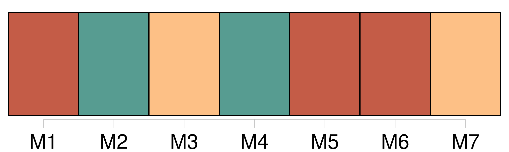
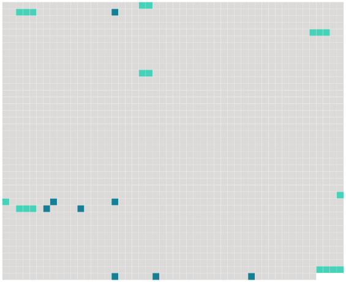

Longueur nb maillons : 15 mentions |
 |
RÉVEIL [1 phrases] [M. Vasseur] , bien plus vieux qu'elle, était bon. Elle [l'] aimait ; et jamais une pensée coupable n'avait pénétré dans son coeur. [6 phrases]
Mais les gens qui passaient sur les côtes voisines, et qui regardaient le trou blanc de la vallée, voyaient surgir au-dessus des brumes accumulées au niveau des collines, les deux cheminées géantes des établissements de [M. Vasseur] , qui vomissaient nuit et jour à travers le ciel deux serpents de fumée noire. [11 phrases]
Elle eût aimé plus tendrement [son mari] s'ils avaient vécu comme deux amis, s'en tenant aux chastes baisers qui sont les caresses des âmes. [33 phrases]
Elle comprit qu'elle ne résisterait plus longtemps ; et, comme elle ne voulait pas faillir, elle écrivit à [son mari] qu'elle désirait retourner près de [lui] et reprendre sa vie tranquille et solitaire.
[Il] répondit une lettre excellente, en la dissuadant de revenir en plein hiver, de s'exposer à ce brusque dépaysement, aux brumes glaciales de la vallée.
Elle fut altérée et indignée contre [cet homme confiant] , [qui] ne comprenait pas, [qui] ne devinait pas les luttes de son coeur. [17 phrases] [Son mari, surpris] , lui reprocha ce coup de tête.
« Je ne pouvais plus vivre loin de [toi] », dit -elle. [Il] la trouva changée de caractère, plus triste qu'autrefois ; et quand [il] lui demandait : « Qu'as -tu donc?? |
 |
Il est possible de télécharger la ressource sur la page Ortolang |
Si vous avez des questions ou vous voyez des erreurs, merci d'envoyer un mail à silvia.federzoni89@gmail.com |